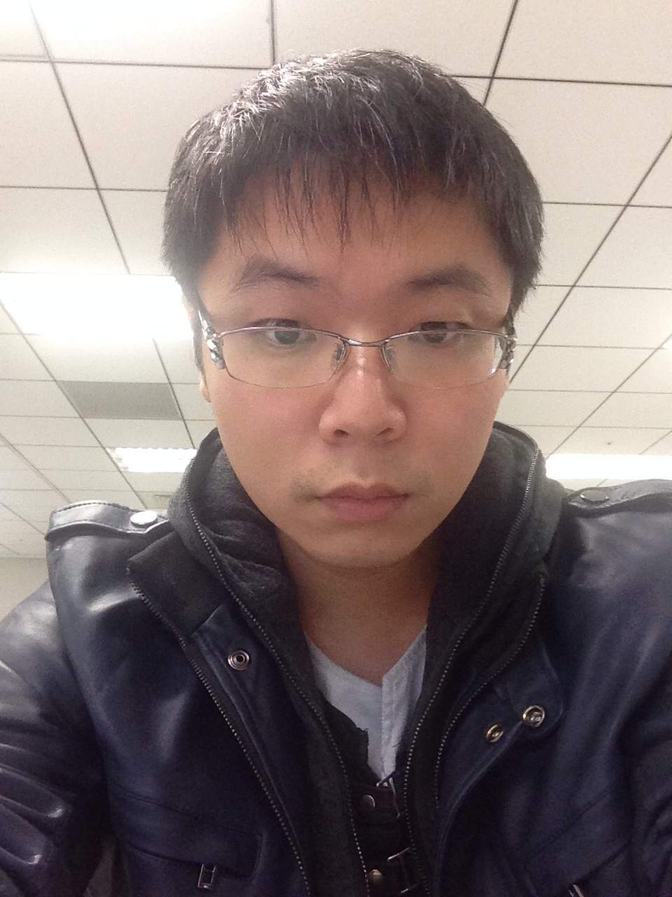

遊戲 API 聚合平台：營運風控與新市場錢包
2020.04 – 至今風控與商戶後台主力開發者。從零打造簡訊邀請行銷系統（Cloudflare Workers＋Analytics Engine），完成 8 時區 × 4 套系統的時區架構，以及南亞三語錢包的國際化。
大表查詢 90 秒 → 2～3 秒 · 一個月上線新系統

REX LU · 台北16 年系統開發與架構經驗，專精金流安全、高併發平台與多租戶系統。現在以 Agentic Engineering 工作：架構、拆解與品質把關由我負責，實作交給平行的 AI agent，一個人交付過去一個團隊的產能。
$ git log --author=rex --since=2025-10 --no-merges | wc -l 3,300+ $ claude --worktrees --parallel ✓ 44 worktrees · 跨模型審查開啟 $ report --month=2026-08 交付點數 743 全隊 60% 第 2 名的 2.9× $ ls ~/Applications/home-cooked MyGhost MyXnip TypeTop AirGrip +8 $ _
About
我從 2010 年開始寫網站，前期在 Yahoo! 超級商城、無名小站與 PChome 行動支付（Pi 錢包初版開發主力）累積電商與金流底子，之後在菲律賓與台灣帶領海外遊戲平台團隊，最多同時帶過 21 位工程師，經手每週營業額破億台幣的線上平台。
我最在意的是「錢不能錯」。跨系統的金流確認、逾時與重複入帳、對帳與補救機制，我都在設計初期就納入；處理錯誤情境的難度，往往是正常流程的三倍以上。近一年的兩階段轉帳安全流程、提款派單守門與壓測調校，都從這個原則出發。
2025 年起，我把工作方式完整轉成 Agentic Engineering：用 Claude Code、Codex、Gemini 組成可審查、可重跑的開發產線，自己專注在架構、拆解、審查與上線把關。小編制，也能交付大團隊的成果。
Agentic Engineering
2026 年業界把這種工作方式稱為 Agentic Engineering：人掌握架構與品質，AI agent 負責撰寫、測試與交付。以下是我每天實際在跑的流程。
先釐清業務規則與錯誤情境，把需求拆成可獨立驗證的工作單元，寫下驗收基準。
由我負責每張工單一個 git worktree，多個 agent 同時開發互不干擾，單一專案最多 44 個平行工作區。
AI agent 執行Claude 寫、Codex 審；重構以舊系統實際輸出為真相，自寫黑盒比對工具逐欄驗證。
跨模型＋工具人工 review、測試與灰度開關後才進正式環境，過程沉澱成可重跑的 skill 與文件。
由我負責實證：團隊縮編時的一個月 2026 年 8 月，團隊實質開發人力只剩 4 人，三位同事相繼離開。
Recent work · 2025–2026
企業專案依保密需求，以產品型態描述。
正職
風控與商戶後台主力開發者。從零打造簡訊邀請行銷系統（Cloudflare Workers＋Analytics Engine），完成 8 時區 × 4 套系統的時區架構，以及南亞三語錢包的國際化。
大表查詢 90 秒 → 2～3 秒 · 一個月上線新系統
接案
兩階段轉帳＋逾時反查、提款派單守門；WAF 白名單由應用直推並回寫 Terraform；正式規格壓測找出三個根因。三個月 788 commits，佔全隊 29%。
失敗率 62.8% → 0.03% · p95 60s → 10.9s
主導 Legacy PHP 到 Lumen 10 三層架構重構，86 支路由寫了 73 支；跨 70+ schema 報表聚合；config-driven 一次支援 75 家平台；宣告式 diff 同步引擎通過客戶驗收。
SQL 數 −96% · 41/42 家新舊逐欄對齊
為集團旗下三家公司把勞報單搬上線：稅務規則引擎（含 183 天居住者規則）、四級簽核、單批 2 萬筆上傳、中英 PDF；延伸的會計系統已完成需求訪談與四期規劃。
3 API ＋ 3 前端 · 已交付並持續擴充
內容站、會員與互動占卜工具一人完成。AI 先產初稿、專家審核後送出，生成 worker 沙箱化；SEO／AEO 改造後核心關鍵字 Bing 排名第 1，Google 曝光 +58%。
121 支 API · 零停機網域遷移
自有產品
分層記憶、依真實在線心跳的主動訊息、6 階段關係養成、多角色群聊；對話走 Gemini 串流，其餘生成改走本機 Claude，壓低成本。
7 天從啟動到公測
每天體檢客戶與同業網站，並用真實問句問 ChatGPT、Claude、Gemini、Perplexity，排出誰被 AI 看見；附 GEO 五大體質診斷與每日內容熱點。
45 天 857 則 AI 回答 · 找出「覆蓋率而非排名」的瓶頸
Toolsmith · Home-cooked software
《人月神話》描述的理想團隊裡有一個角色叫「工具匠」，專門為團隊打造順手的工具。AI agent 讓這件事變得便宜：與其忍受商業軟體的限制，不如照自己的工作流做一個。2026 年我做了 12 個 macOS 原生 App，每一個都每天在用。有公開的都附上 GitHub 下載連結。
為長時間跑 AI agent 設計的終端機：側欄分頁、tmux 讓 session 當機也能接回、遠端 SSH 分頁自動重連、貼圖自動上傳給遠端 agent、Claude／Codex 額度儀表板，還有手機可用的 Web 版。
GitHub 下載最新版 →舊截圖 API 會凍住整台機器，改用 ScreenCaptureKit 重設計成「先擷取、後顯示」。滾動長截圖、標註、OCR。
按住右 ⌘ 說話，Whisper 轉文字後由 LLM 修正並打進任何輸入框；支援裝置端 Apple Intelligence 與 7 家 LLM 自動切換。
GitHub 下載最新版 →InputMethodKit 自寫引擎：DP 詞格組句、選字學習與衰減、縮寫快選。
用鏡頭辨識手勢操作系統，Vision 手部姿勢辨識，全部本機運算。
影片下載器，補上原版抓不到的平台；瀏覽器擴充一鍵喚起、App 自我更新。
螢幕頂部靈動島儀表板：系統監控、待辦、網速、剪貼簿與隔空投送。
摸清 macOS 27 狀態列的新排版規則後重寫收納邏輯，一天完成。
鍵盤操控倍速與循環的輕量播放器。
Skills
Experience
延伸開發 Laravel 與 ThinkPHP 系統，帶領 RD 建立代收商戶架構與營運後台；串接支付寶、銀行卡、話費與 USDT 等三方金流；主導跨國溝通（菲律賓、杜拜）與遠距協作。近年負責風控、商戶後台、行銷系統與新市場錢包。
承接企業級平台重構與進駐開發（代理分潤後台、錢包金流與雲端），以及中小企業與品牌的系統從零交付（勞報與會計系統、占星品牌平台）。
以 Yii 與 Go 開發第三方遊戲平台接入，把關遊戲邏輯與財務報表；以 Go 開發大額訂單即時分流與對沖系統。
由菲律賓總部派駐回台建立團隊，最多帶領 21 人。以 Laravel 打造用戶分析中心、遊戲中心、充值、風控與分紅制度，帶隊參加 2018 澳門 G2E 展。
負責每週營業額平均破億台幣的線上平台：一個新平台開發、四個平台營運；多平台核心複用、NoSQL 壓測與手機遊戲 API。
Pi 行動錢包初版開發主力：多主機架構、資料庫快取套件、銀行金流、風控與會計帳務；導入測試與 Scrum。
Yahoo! 超級商城購買資料分析與廣告合作、無名小站重構（測試覆蓋率 70%→80%）；旅遊新創 App API；政府網站獲金手指獎。